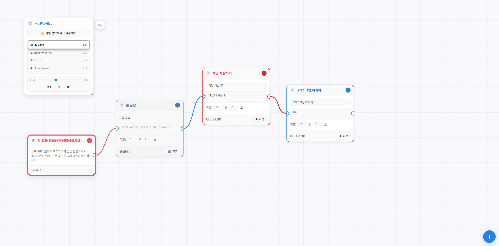
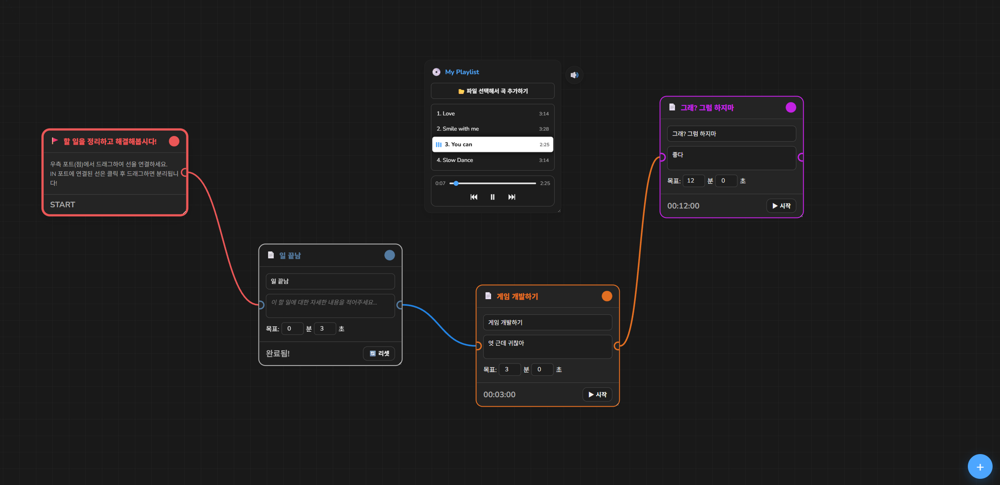

Time Flow는 단순한 일정 기록을 넘어 당신의 시간을 완벽하게 시각화합니다. 직관적인 타임라인 인터페이스를 통해 하루를 한눈에 파악하고, 깊이 있는 분석 데이터를 통해 숨겨진 생산성을 발견하세요.
스마트 우선순위 제안 시스템은 당신의 업무 패턴을 학습하여 가장 효율적인 스케줄을 제안합니다. Time Flow와 함께라면 지루한 시간 관리가 즐거운 습관으로 바뀝니다.

직관적인 타임라인 뷰. 드래그 앤 드롭으로 일정을 쉽게 관리하세요.

깊이 있는 생산성 분석 대시보드. 당신의 시간 활용 패턴을 확인하세요.